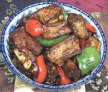

|
Spare Ribs in Black Bean SauceChina - Cantonese | ||||
| Serves: Effort: Sched: DoAhead: |
4 side *** 45 min Most |
This distinctly flavored spare rib recipe from the Southeast of China produces plenty of sauce so it's fine for serving with long grain rice. It reheats well but the bell peppers will be less crisp. | |||
|
|
2 2 ------ 2-1/2 2 2 1 1-1/2 1/4 ------ 1 1/2 2 1/2 3/4 ------ 2 1/2 |
# lrg --- T cl T T T t --- T c T t t --- T c |
Pork Ribs (1) Bell Peppers (2) -- Sauce Black Beans (3) Garlic Soy Sauce Rice Wine Water Sesame Oil -- Thickener Cornstarch Water Dark Soy Sauce Sugar Salt ----------- Oil Stock, strong |
PREP - (50 min - 20 min work)
|
csm_pigrib5 070903 r 190721 prcc189 -
www.clovegarden.com
©Andrew Grygus - agryg@aaxnet.com - Linking to and
non-commercial use of this page is permitted.